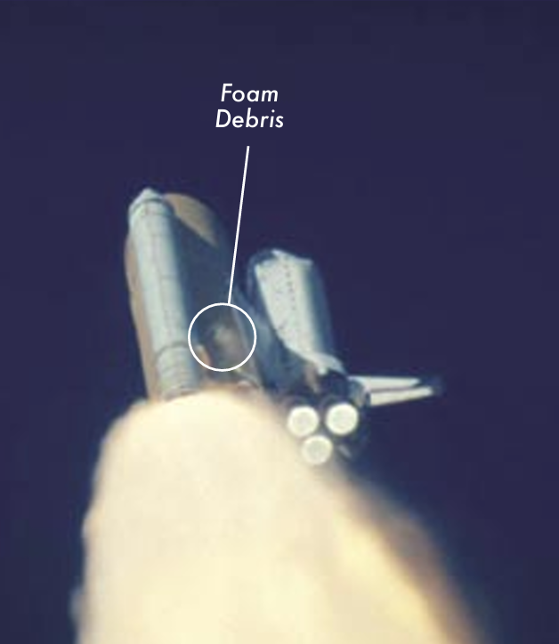

ENG0018 Computer Laboratory 2026/27
Student URN: 6980185
Conference Paper: The Reusability Paradox: Why Surviving Hypersonic Flight Is Not Enough
Abstract
Reusable spacecraft must survive intense heating during atmospheric re-entry and then fly again quickly. This paper uses a literature-based comparison of the Space Shuttle, SpaceX Starship, Dream Chaser and concept ultra-high-temperature ceramic vehicles to examine this reusability paradox for orbital re-entry. Ideal stagnation temperatures rise from about 1,030 °C at Mach 5 to above 4,000 °C at Mach 10, and newer materials extend the temperatures heat shields can tolerate. However, the Shuttle's thermal protection required nearly 32,000 maintenance hours per mission, and experts doubt that Starship's tile-based shield can support rapid reuse. Falcon 9 shows that fast reuse is achievable under moderate heating. The paper argues that surviving re-entry is necessary but no longer sufficient: turnaround, through inspection, repair and certification, is the binding constraint. Airline-style reuse of orbital vehicles remains unproven.
1. Introduction & Background
1.1 Defining the Reusability Paradox
Early spacecraft relied on expendable heat shields. The Apollo 4 capsule returned from lunar-return velocity protected by an ablative shield that was deliberately consumed during re-entry (Manned Spacecraft Center, 1968), an approach unsuited to routine operations (Heppenheimer, 1999).
The Space Shuttle introduced reusable silica tiles and reinforced carbon-carbon (RCC) panels, yet each flight still demanded extensive inspection and repair (Curry, 1993). On launch, foam shed from the external tank struck Columbia's left wing (Figure 1). The resulting RCC damage let superheated gas into the wing during re-entry and destroyed the vehicle (Columbia Accident Investigation Board, 2003). Figure 2 shows the RCC leading-edge panels involved (NASA Kennedy Space Center, 2004).


Columbia's lesson is that surviving heat is only half the problem: a spacecraft must also be inspected, repaired and certified quickly enough for reuse to be economic. This tension is the reusability paradox.
1.2 Why Hypersonic Re-entry Is So Hot
Hypersonic flight means speeds above Mach 5 (NASA Glenn Research Center, no date). A shock wave compresses the air ahead of the vehicle, so most heating comes from compressed gas rather than surface friction (Tauber, 1989), and stagnation-point convective heat flux rises roughly with the cube of velocity (Sutton and Graves, 1971). The ideal stagnation temperature is given by Equation 1 (Ames Research Staff, 1953):
Here T0 is the stagnation temperature, T∞ the freestream temperature, γ the ratio of specific heats (1.4 for air) and M the Mach number.
With T∞ = 216.65 K, Mach 5 gives about 1,030 °C and Mach 10 about 4,280 °C (Figure 3). Real values are lower because energy is absorbed by molecular dissociation (Hayes and Probstein, 1959), and a vehicle's surface settles well below the air's stagnation temperature because it radiates heat away. Figure 3 is therefore an indicator of thermal severity, not a failure prediction: the Shuttle survived re-entry at orbital speed, far above Mach 6. It does show that thermal load grows with the square of Mach number, so small speed increases demand disproportionately more of a heat shield.
1.3 Scope and Method
This paper considers orbital re-entry, where heating is intense but brief, rather than sustained hypersonic cruise, which poses a different thermal problem. It compares the Space Shuttle, SpaceX Starship, Dream Chaser and concept ultra-high-temperature ceramic (UHTC) vehicles by heat-shield material, temperature capability and turnaround bottleneck (Table 1). Sources are NASA technical reports, accident-investigation records, peer-reviewed materials research and, for current Starship status, 2026 professional and press reports. The argument is that temperature resistance is improving, but turnaround is now the binding constraint on reuse.
2. Analysis and Discussion
2.1 Thermal Protection System (TPS) Trade-offs
Every thermal protection system (TPS) trades temperature capability against durability, mass and maintenance (Stackpoole, 2022). Apollo's ablator was effective but single-use (Manned Spacecraft Center, 1968), while the Shuttle's tiles and RCC were reusable but maintenance-heavy (Curry, 1993). Newer materials such as TUFROC (NASA Ames Research Center, 2019) and UHTCs (Fahrenholtz and Hilmas, 2017) extend temperature capability, although many remain costly, brittle or hard to manufacture (Ni et al., 2022).
Figure 3 shows why this matters: ideal stagnation temperatures exceed the quoted RCC and TUFROC limits near Mach 6, so materials adequate at low hypersonic speeds face rising demands as speed increases. Yet the Shuttle's survival shows that peak temperature alone does not decide whether a heat shield fails. Thermal capability is necessary but not sufficient, and no current TPS resolves the balance between performance and rapid reuse.
2.2 Turnaround, Inspection and Damage
Heat shields must be inspected after every mission for cracks, impacts and degradation. One NASA estimate put Shuttle TPS maintenance at nearly 32,000 labour hours per mission (Scotti, Clay and Rezin, 2003), which made rapid turnaround impractical. In 2005, protruding gap filler on Discovery's underside had to be pulled out by an astronaut during a spacewalk (Figure 4; NASA, no date). After Columbia, NASA expanded non-destructive evaluation, such as infrared thermography, to find hidden RCC damage (NASA Langley Research Center, no date).

Starship faces the same problem at larger scale. Its heat shield uses roughly 18,000 hexagonal ceramic tiles (Figure 5; TechCrunch, 2024), and former NASA specialists argue that this tile approach is not viable for rapid reuse (AIAA, 2026). Metallic hot structures aim to simplify inspection (Scotti, Clay and Rezin, 2003). Figure 6 places inspection, repair and certification within the re-entry-to-relaunch cycle, and Table 1 compares how each vehicle handles them.

| Vehicle / System | Primary TPS Material | Temperature Capability | Turnaround Bottleneck |
|---|---|---|---|
| Space Shuttle Orbiter | Silica tiles and blankets; RCC on nose and wing leading edges (Curry, 1993) | Up to about 1,650 °C on the hottest surfaces (NASA Kennedy Space Center, 2004) | Tile inspection and repair; nearly 32,000 maintenance hours per mission (Scotti, Clay and Rezin, 2003) |
| SpaceX Starship | About 18,000 hexagonal ceramic tiles (TechCrunch, 2024) | Not confirmed in public sources | Tile inspection and attachment; experts doubt rapid reuse (AIAA, 2026) |
| Dream Chaser | TUFROC (carbon-based cap on silica insulating base), licensed from NASA (NASA Ames Research Center, 2019) | Reusable to about 1,600 °C (NASA Ames Research Center, 2019) | Little public turnaround data |
| Future hypersonic glide vehicles (concept) | Ultra-high temperature ceramics (UHTCs) | Highest known melting points; usable limits still being tested (Fahrenholtz and Hilmas, 2017) | Brittleness and difficult manufacture (Ni et al., 2022) |
Temperatures quoted in °F by the sources are converted to °C.
2.3 Counter-evidence: Falcon 9 and Starship Progress
The strongest counter-argument is that rapid reuse already works. Falcon 9 first stages are routinely refurbished, and one booster reached a record 37th flight in August 2026 (Keppeler, 2026). Booster re-entry is much slower than orbital return, however, so this shows that maintenance can be engineered down when heating is moderate, which supports the turnaround argument rather than refuting it. Starship's progress is real: SpaceX reportedly caught the upper stage after orbital flight for the first time in November 2026, although reporting notes its heat shield is not yet fully reusable (TimesLIVE, 2026).
3. Conclusion
This paper has argued that, for orbital re-entry, surviving the heat is no longer the binding constraint on reusable spacecraft; turnaround is. Ideal stagnation temperatures climb steeply with Mach number (Figure 3), and materials such as TUFROC and UHTCs raise the temperatures heat shields can tolerate. Yet the Shuttle's maintenance burden of nearly 32,000 hours per mission and the continuing inspection challenge of Starship's tiles show that thermal capability alone does not deliver rapid reuse.
Falcon 9 demonstrates that fast, repeated reuse is achievable under moderate heating, so the open question is whether the same can be done at orbital re-entry heating. The evidence reviewed suggests the answer depends less on a single hotter material than on heat shields that are quick to inspect, repair and certify, for example through metallic hot structures and non-destructive evaluation.
Hence, the true reusability paradox is that modern spacecraft can increasingly survive hypersonic re-entry, yet still cannot be returned to service quickly enough for airline-style operations.
This review is limited to published sources: Starship evidence relies partly on press reports and Dream Chaser has little public turnaround data. The conclusions should be revisited as flight results are published.
References
- AIAA (2026) 'Starship heat shield tech is not viable for rapid reuse, say experts', AIAA, 28 July. Available at: https://aiaa.org/2026/07/28/starship-heat-shield-tech-is-not-viable-for-rapid-reuse-say-experts/ (Accessed: 26 November 2026).
- Ames Research Staff (1953) Equations, tables, and charts for compressible flow. NACA Report 1135. Washington, DC: National Advisory Committee for Aeronautics.
- Columbia Accident Investigation Board (2003) Report Volume I. Washington, DC: National Aeronautics and Space Administration and the Government Printing Office.
- Curry, D.M. (1993) Space Shuttle Orbiter thermal protection system design and flight experience. NASA Technical Memorandum 104773. Houston, TX: NASA Lyndon B. Johnson Space Center.
- Fahrenholtz, W.G. and Hilmas, G.E. (2017) 'Ultra-high temperature ceramics: Materials for extreme environments', Scripta Materialia, 129, pp. 94–99.
- Hayes, W.D. and Probstein, R.F. (1959) Hypersonic flow theory. New York: Academic Press.
- Heppenheimer, T.A. (1999) The Space Shuttle decision: NASA's search for a reusable space vehicle. NASA SP-4221. Washington, DC: NASA History Office.
- Keppeler, J. (2026) 'SpaceX sets a rocket-reuse record with Falcon 9 launch', UPI, 25 August. Available at: https://www.upi.com/Top_News/US/2026/08/25/SpaceX-sets-a-rocket-reuse-record-with-Falcon-9-launch/7011787681645/ (Accessed: 26 November 2026).
- Manned Spacecraft Center (1968) Apollo 4 mission report. MSC-PA-R-68-1. Houston, TX: NASA Manned Spacecraft Center.
- NASA (2003) Columbia Debris, NASA Image KSC-03pd2767. Kennedy Space Center, FL: NASA. Available at: https://images.nasa.gov/details/KSC-03pd2767 (Accessed: 26 November 2026).
- NASA (no date) STS-114. Available at: https://www.nasa.gov/mission/sts-114 (Accessed: 26 November 2026).
- NASA Ames Research Center (2019) TUFROC thermal protection system. NASA Technical Reports Server, ID 20190030273. Moffett Field, CA: NASA.
- NASA Glenn Research Center (no date) Beginner's guide to hypersonics. Available at: https://www.grc.nasa.gov/www/BGH/ (Accessed: 26 November 2026).
- NASA Kennedy Space Center (2004) Reinforced carbon-carbon (RCC) panels. Fact Sheet FS-2004-01-001-KSC. Kennedy Space Center, FL: NASA.
- NASA Langley Research Center (no date) Infrared thermography. Available at: https://www.nasa.gov/langley/nesb/infrared-thermography-nesb (Accessed: 26 November 2026).
- Ni, D. et al. (2022) 'Advances in ultra-high temperature ceramics, composites, and coatings', Journal of Advanced Ceramics, 11(1), pp. 1–56.
- Scotti, S.J., Clay, C. and Rezin, M. (2003) 'Structures and materials technologies for extreme environments applied to reusable launch vehicles', AIAA/ICAS International Symposium and Exposition, Dayton, OH, 14–17 July. Reston, VA: AIAA, Paper 2003-2697.
- Space Exploration Stack Exchange (no date) 'How many different hexagonal tiles/modules are required to pave one Starship?', question 50672. Available at: https://space.stackexchange.com/questions/50672/how-many-different-hexagonal-tiles-modules-are-required-to-pave-one-starship (Accessed: 26 November 2026). Image source only.
- Stackpoole, M. (2022) 'Thermal protection materials and systems at NASA Ames Research Center', 2nd International Conference on Flight Vehicles, Aerothermodynamics and Re-entry Missions & Engineering (FAR), Heilbronn, Germany, 19–23 June.
- Sutton, K. and Graves, R.A. (1971) A general stagnation-point convective-heating equation for arbitrary gas mixtures. NASA Technical Report NASA-TR-R-376. Washington, DC: NASA.
- Tauber, M.E. (1989) A review of high-speed, convective, heat-transfer computation methods. NASA Technical Paper 2914. Moffett Field, CA: NASA Ames Research Center.
- TechCrunch (2024) 'SpaceX sent Starship to orbit; the next launch will try to bring it back', TechCrunch, 30 May. Available at: https://techcrunch.com/2024/05/30/spacex-sent-starship-to-orbit-the-next-launch-will-try-to-bring-it-back/ (Accessed: 26 November 2026).
- TimesLIVE (2026) 'WATCH | SpaceX Starship successfully caught in tower arms', TimesLIVE, 15 November. Available at: https://www.timeslive.co.za/news/world/2026-11-15-watch-spacex-starship-successfully-caught-in-tower-arms/ (Accessed: 26 November 2026).